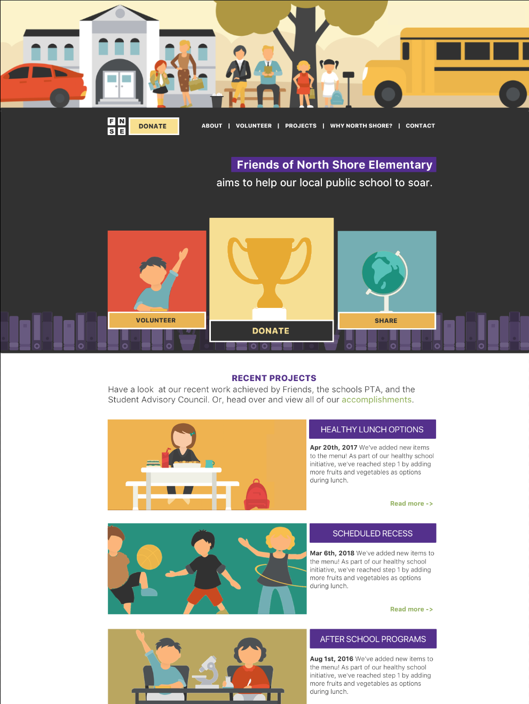

A Design Proposal
Fri, May 25, 2018I’ve been working with a local charity to revamp their website. This has been a good project for me for a few reasons. First, as a coder, this gives me a chance to workout some design muscles. Second, as someone who normally answers only to myself, this gives me a chance to pitch to a group and understand their needs and wishes.
That said, I recently gave them a first proposal. This came about once they officially asked for a new website. Now, I got inspired, and ran with an idea. This is prior to any meetings defining goals. Because of that, there is a good chance that the design and/or brand is not exactly what they’re looking for. Still, I’m documenting it here so that I can look back.
I started messing around with a logo, and became a bit inspired by a cutout look.
As a neat added plus, the logo would change colors depending on what background it is on.

Moving forward, that led to a smaller version of the logo.
Sure, 4 squares is nothing original. It is clean though, and since this is for a local charity a strong unique brand doesn’t have to be established. I particularly liked the look of this logo with a donate button next to it.
After that, a next wave of inspiration hit when I stumbled across this School Flat Collection. That dictated a potential hero image and feel for the site.

Just like the logo, the top half of the site would work with any color, and can be changed as the charity needs to promote a new event. For example:

From there, I designed out different modules and sub pages based off of this brand idea. The shots above provide enough context though. It will be interesting to see where the final design ends up knowing that this was step one.
As a bonus, here is the very first image I designed for this site. Looking back, it’s awful. It’s amazing what iteration does.
